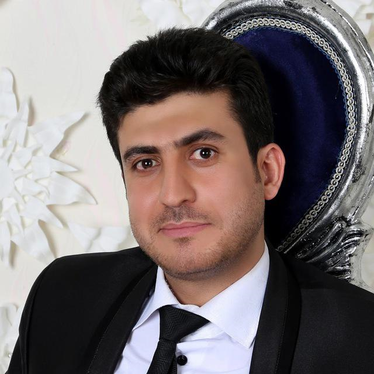

Zohair RezaeiMobin
Medical & Cosmetic Treatment Interpreter | Export Sales
Shiraz-based professional working with international patients, multilingual communication, WordPress and export sales.
Medical & Cosmetic Treatment Interpreter | Export Sales
Shiraz-based professional working with international patients, multilingual communication, WordPress and export sales.

I work as a medical and cosmetic treatment interpreter in Shiraz, helping international patients communicate with clinics and medical teams. I also have professional experience in export sales and practical experience with WordPress, websites and digital content.
Zohair RezaeiMobin
Shiraz, Iran
Arabic, Persian, English, some German, some Kurdish
Medical & cosmetic interpretation
Arabic, Persian and English interpretation, patient communication and treatment coordination for international patients in Shiraz.
WordPress websites, multilingual content, social media and practical web solutions for service businesses.
Managed export sales and customer development for fish feed, with a focus on the Iraqi market.
Completed 11-year Iranian secondary education. Professional learning has continued through practical work in web, content and international business.
Arabic, Persian and English interpretation and patient support in Shiraz.

Patient communication, appointments and practical coordination around treatment.

Lightweight websites, WordPress management and multilingual content.

International sales and customer development, including the Iraqi market.